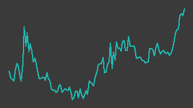

フォルシア（304A）
東証グロース／レポート更新 2026-10-02
IR情報 ↗株探 ↗IR BANK ↗

画像判定※・6か月・基準日 2026-10-02一行でいうと：旅行・観光業界向けの検索エンジン基盤「Spook」を核に、開発収益と月額収益で稼ぐ東証グロースのIT企業。26/2期は大型案件の売上計上が検収時点へずれて大幅減益だったが、会社は27/2期に売上31.1億円✓・営業利益4.12億円✓（前期比約5.8倍）を計画し、1Qは増収増益で着地した。計画の成否は、検収で計上される大型案件が2Q（10月15日発表予定）に乗るかにかかっている。
週次アップデート最新 2026-W40・全 2 件
新しい週を上に置いている。過去の記述は書き換えず、そのまま残している。
2026-W40（2026-09-28 週）
開示・ニュースなしの中で続伸した。
- 株価: 週間 +5.3%（2065→2175円・採用終値ベース、照合成立 5日、週内 2071〜2175円）
- 出来高: 前週比 +89.7%（今週 12,900株／前週 6,800株）※／信用倍率: 算出不可（RATIO_NA）・買残 38.4千株（09/25時点）※
- 判定: 「調査」／開示: なし
（解釈）直近7日の開示・ニュースは見出し一覧に無い。出来高は今週 12,900株と極めて薄く、少ない売買で値が動いている可能性がある。 10/15 の決算発表予定（fetch_earnings.py の取得値）が近く、それを前にした先回りの買いの可能性もあるが、材料は確認できていない。
次週に見ること: ① 10/15 予定の決算発表に向けた開示の有無 ② 薄商いのまま上昇が続くか
2026-W39（2026-09-21 週）
監視開始の週。株価は小動きで上昇したが、材料は見つかっていない。
- 楽天証券のスクリーニング「成長株0830（per）」の通過銘柄として 2026-09-27 に監視を始めた（
data/master.yamlの watch_reason） - 採用終値は 9/18 の1,997円✓から 9/25 の2,065円✓へ約3.4%上昇（祝日で立会は 9/24・9/25 の2日のみ）。出来高は 2,800株※・4,000株※と薄く、動いた理由は特定できていない（出典:
data/prices/daily.csv、取得 2026-09-27） - 今週、会社のIRニュースと株探・Yahoo!ファイナンスのニュース欄に本銘柄固有の新しい開示・報道は見当たらなかった（https://www.forcia.com/ir/ ・ https://finance.yahoo.co.jp/quote/304A.T/news 、いずれも 2026-09-27 閲覧）
- 株予報（IFIS）は次回決算（2Q）を 2026-10-15 と表示している（https://kabuyoho.ifis.co.jp/index.php?action=tp1&sa=report&bcode=304A 、2026-09-27 閲覧）
次週に見ること：①10/15 の2Q決算を前に業績修正の開示が出ないか ②出来高が数千株の水準から変わるか
次期売上・利益推定対象 FY2027-02・作成済み・変数 6 個
作成済み 対象期 FY2027-02・起案 2026-09-27。検証済みデータと明示した仮定から機械計算した概算であり、会社計画でも的中予想でもない。推定 の付いた変数を疑うための頁。
会社計画・市場予想・実績との比較（百万円）
| 指標 | 前期実績 | 会社計画 | 市場予想 | 当台帳推定 | 市場予想比 |
|---|---|---|---|---|---|
| 売上 | 2,197 | 3,113 | — | 3,092 | — |
| 営業利益 | 71 | 412 | — | 371 | — |
市場予想: 確認できず。みんかぶの証券アナリスト予想ページ（https://minkabu.jp/stock/304A/analyst_consensus、2026-09-27）は取得が 403 で拒否され、コンセンサスの有無を確かめられていない（東証グロース・時価総額の小さい銘柄でカバーは無い可能性が高いが未確認）。 比較対象は会社計画のみ
計算の分解
| セグメント | 式（値を代入） | 売上（百万円） |
|---|---|---|
| 月額収益（SaaS型＋ソリューション型） | 316 × 4.1 = 1,295.6 | 1,296 |
| 開発収益（進捗計上の通常分） | 349 × 4 = 1,396 | 1,396 |
| 検収一括計上の大型案件（前期からの繰延） | 400 = 400 | 400 |
変数と根拠
カードを押すと、その値の置き方（メモ・出典）が開く。推定 の変数から疑うこと。
月額収益（SaaS型＋ソリューション型）q1_monthly_revenue316開示（一次）
月額収益（SaaS型＋ソリューション型）annualize_monthly4.1推定
開発収益（進捗計上の通常分）q1_dev_revenue349開示（一次）
開発収益（進捗計上の通常分）annualize_dev4.0推定
検収一括計上の大型案件（前期からの繰延）deferred_project_revenue400推定
全社op_margin0.12推定
感度 — この推定を最も動かす変数
各変数を +10% したときの営業利益の変化。上にある変数ほど、根拠を厚く確かめる価値がある。ただし op_margin だけは別扱い——営業利益 = 売上合計 × op_margin なので +10% は定義上つねに +10% になり、売上側の変数と大小を比べても意味が無い。
| 変数 | セグメント | 営業利益への影響 |
|---|---|---|
op_margin | 全社 定義上 | +10.0% 乗法モデルなので定義上つねに +10%。売上側の変数との大小比較には意味が無い（率の水準そのものを疑うこと） |
annualize_dev | 開発収益（進捗計上の通常分） | +4.5% |
q1_dev_revenue | 開発収益（進捗計上の通常分） | +4.5% |
annualize_monthly | 月額収益（SaaS型＋ソリューション型） | +4.2% |
q1_monthly_revenue | 月額収益（SaaS型＋ソリューション型） | +4.2% |
deferred_project_revenue | 検収一括計上の大型案件（前期からの繰延） | +1.3% |
推定の変遷
過去の版は書き換えずに残す。数値感がどう変わってきたかが学習の履歴になる。
| 起案日 | 対象期 | 売上 | 営業利益 | 何を変えたか |
|---|---|---|---|---|
| 2026-09-27 | FY2027-02 | 3,092 | 371 | 初版（Claude 起案・人間未確認）。単一セグメント（デジタルビジネスプラットフォーム事業）だが、会社は売上を『月額収益』 （保守運用・ライセンス・サービス利用料）と『開発収益』（進捗に応じて計上）に分けて開示しており、その2区分＋検収一括計上の 大型案件1件で組む。会社計画は売上 3,113・営業利益 412 百万円（前期比 +41.7%・+477%）。この増収の核は、前期（FY2026-02）に 監査法人との協議で『検収時点で計上』に変わり翌期へ繰り延べられた一部大型案件の売上で、会社は2Q（2026-06〜08）の計上を予定と 説明している（1Q決算説明資料 p11）。その金額は開示されていない。+10%感度で最も効くのは通常の開発収益（1Qペース×係数）と月額収益で、一括分は +10% では小さいが、2Qに計上されるか否か（0か約400か）の二値の振れが大きい。 2Q決算（2026-10-15）で一括分が計上されたか・いくらかが分かるので、そこで置き直す前提。 出典: 2026年2月期 通期決算説明資料 https://contents.xj-storage.jp/xcontents/AS09136/1de05825/128b/44ce/b302/98b337edbd95/140120260414504185.pdf ／2027年2月期 第1四半期決算説明資料 https://contents.xj-storage.jp/xcontents/AS09136/b47b9c0d/0212/40af/9849/3d5dc9a8dae9/140120260714593270.pdf ／業績予想と決算値との差異に関するお知らせ https://contents.xj-storage.jp/xcontents/AS09136/4875a2ff/8c81/44ca/bb8d/62301fa0cbb8/140120260414504137.pdf （いずれも 2026-09-27 取得） |
会社概要この会社は何者か・財務の推移と健全性・今後の展望とリスク・値動きと市場の評価・出典・検証の記録
この会社は何者か
- 事業: 膨大・複雑なデータから必要な情報を瞬時に引き出す検索技術を基盤とするIT企業。独自の情報検索プラットフォーム「Spook®」を持ち、大手旅行会社の予約サイトや専門商社のECサイトに検索機能を提供している（日本経済新聞、会社サイト。出典節）
- 顧客構成: 顧客の約77%※が旅行・観光業界で、主要旅行会社上位10社中8社に検索機能を提供していると社長が説明している（26/2期1Q決算説明会。ログミーFinance 経由の二次情報。出典節）
- 稼ぎ方: 収益は2種類。①開発収益＝システム構築・導入時の設定・カスタマイズ・コンサルティングの対価（顧客の検収で計上される大型案件を含み、期ずれが起きやすい）②月額収益＝運用保守・ライセンス・サービス利用料で、導入顧客数の増加に伴い積み上がる（27/2期1Q決算短信の説明。出典節）。2020年から SaaS 型の提供も始めている
- 上場: 2024年12月26日に上場（日本経済新聞）。市場区分は東証グロース、業種は情報・通信（Yahoo!ファイナンス表示）。決算期は2月、非連結
- 規模感: 発行済株式数は約123万株※、時価総額は約25億円※（いずれも Yahoo!ファイナンス表示、2026-09-25 終値ベース。未照合）。自己資本比率は27/2期1Q末で87.3%※（決算短信の要約を二次サイト経由で確認）と、無借金に近い財務
ビジネスモデル（定性図ではなく箇条で記す）
旅行会社などの主要顧客が「基幹システム刷新」「新サービス構築」を発注 → フォルシアが Spook を土台に開発（開発収益。検収で一括計上される案件がある）→ サービスイン後は運用・ライセンス・利用料が毎月入る（月額収益）。大型案件が1件ずれると、四半期・通期の利益が大きく振れる構造と読める。
財務の推移と健全性
通期（百万円。すべて2ソース照合済みの採用値✓）:
| 期 | 売上高（百万円） | 営業利益（百万円） | 経常利益（百万円） | 純利益（百万円） |
|---|---|---|---|---|
| 23/2期 | 2146 | 102 | 106 | 130 |
| 24/2期 | 1946 | 139 | 140 | 99 |
| 25/2期 | 2310 | 215 | 198 | 131 |
| 26/2期 | 2197 | 71 | 74 | 48 |
| 27/2期 会社計画 | 3113 | 412 | 415 | 275 |
出所: data/fundamentals/304A.csv の採用値（別サイト2つ以上が一致した値だけ）。5/5点を採用。
出所: data/fundamentals/304A.csv の採用値（別サイト2つ以上が一致した値だけ）。5/5点を採用。
- 26/2期は減収・大幅減益。新規大型案件は4Q中に受注・契約締結し計画どおり進んだが、監査法人との協議の結果、一部大型案件の売上を翌期（27/2期）の顧客検収時点で計上することになった、と会社は説明している（出典節の差異開示・決算資料の要約）。上期には「1Q〜2Qで予定していた大型案件の初期開発収益が下期以降に時期ずれ」とも説明しており、期ずれは2度目にあたる
- 一方、SaaS 型サービスの月額収益は26/2期に前年比27.0%増※と伸びたと説明されている（二次情報経由。未照合）
四半期単独（百万円。採用値✓）:
| 期 | 売上高（百万円） | 営業利益（百万円） | 経常利益（百万円） | 純利益（百万円） |
|---|---|---|---|---|
| 26/2期 1Q | 563 | 25 | 26 | 16 |
| 27/2期 1Q | 665 | 74 | 75 | 42 |
出所: data/fundamentals/304A.csv の採用値（別サイト2つ以上が一致した値だけ）。5/5点を採用。
- 27/2期1Qは前年同期比で売上高が約18%増、営業利益は約3倍。基幹システム刷新・新サービス構築の開発収益と、サービスイン後の月額収益の積み上がりが寄与したと会社は説明している
- 通期営業利益計画に対する1Qの進捗は約18%。ただし会社は「一部大型案件は検収時点で売上計上することが適切と判断し、第2四半期に売上計上予定」としており、計画は2Q以降に大型案件の計上が乗る前提と読める（1Q決算短信の要約。出典節）
- 26/2期の四半期営業利益は 25→7.5→17→21百万円✓ と低位で推移しており、直近の増益は27/2期1Qの1四半期分しかない
- キャッシュ: 26/2期末の現金同等物は1,287百万円✓、営業CFは181百万円✓、フリーCFは58百万円✓。25/2期は営業CFが27百万円✓まで細り、フリーCFは−84百万円✓だった
- 資本効率: 26/2期の ROE は2.45%✓。27/2期の会社計画は ROE 13.55%✓・EPS 223.23円✓（前期実績 39.55円✓）
今後の展望とリスク
展望（会社の説明）
- 成長戦略の3本柱は、①既存顧客へのアップセル（基幹システム刷新ニーズ）②観光DX・MaaS への新規参入企業の支援 ③旅行・観光業界を支えるマーケットプレイスの構築（26/2期1Q説明会。出典節）
- 27/2期は売上高41.7%増・営業利益約5.8倍を計画し、会社は1Q時点で計画を据え置いた
リスク
- 検収タイミングへの依存: 大型案件の売上が検収時点で一括計上されるため、検収が1四半期ずれるだけで四半期・通期の数字が大きく変わる。26/2期は期ずれが2度起き、実績は予想を下回った（差異開示あり）。27/2期計画も2Qの検収を前提にしている
- 顧客・業界の集中: 顧客の約77%※が旅行・観光業界で、主要顧客の大型案件が業績を左右する。旅行需要の変動、主要顧客の投資方針の変更が直撃しうる
- 流動性: 1日の出来高は数百〜数千株※の日が多い（直近60営業日の中央値は約700株※。
data/prices/daily.csvの出来高は未照合）。決算翌日には10万株を超える日もあり、材料で値が飛びやすい。台帳の流動性ゲートで止まる可能性が高い - エンジニアの稼働: 大型案件対応で「エンジニア稼働1日当たり売上高」が一時的に低下したと会社自身が説明している。人員（従業員138名、約半数がエンジニア。25年7月時点）の制約が受注の上限になりうる
- 無配（Yahoo!ファイナンスの配当利回り表示 0.00%※）
2Q（10/15予定）で確かめること: ①大型案件が2Qに検収・計上されたか ②通期計画（営業利益412百万円✓）の据え置き／修正 ③月額収益の伸び
値動きと市場の評価
出所: data/prices/daily.csv の採用終値（2つの取得元が一致した終値だけ）。ザラ場の高値・安値は照合を通っていないので使っていない。3/3点を採用、52週の採用終値 230営業日。安値 2026-06-04 / 高値 2025-10-07 / 現在 2026-10-02。
- 取得済みの採用終値は 2025-09-29 以降（それ以前の 2025-08〜09 の行は取得元が1つで未照合）。この期間の最高値は 2025-09-29 の2,695円✓、最安値は 2026-06-04 の1,703円✓、直近は 2026-09-25 の2,065円✓
- 決算への反応（採用終値）:
- 26/2期上期決算（2025-10-15 発表。上期経常58%減益）の翌日、10/15 の2,425円✓→10/16 の2,100円✓と約13%下落
- 26/2期本決算と今期計画（2026-04-14 発表。経常5.6倍の計画）の翌日、4/14 の1,890円✓→4/15 の2,082円✓と約10%上昇。ただし翌日以降は1,900円台へ戻した
- 27/2期1Q決算（2026-07-14 発表）の翌日、7/14 の1,998円✓→7/15 の1,866円✓と約7%下落
- 市場の評価: 会社計画ベースの予想PERは約9.3倍※、実績PBRは約1.25倍※（Yahoo!ファイナンス表示、2026-09-25。未照合）。株予報（IFIS）ではアナリストのコンセンサスは「--」で、カバーは見当たらない。計画達成に対する市場の信頼は低い水準と読める（解釈）
出典
凡例: ✓=2ソース照合済みの採用値 ／ ※=未照合・参考値 ／ †=決算短信（一次情報）から直接
| 区分 | 出典 | 使った箇所 | 取得・閲覧日 |
|---|---|---|---|
| 一次（企業IR） | https://www.forcia.com/ir/ | IRニュースの有無 | 2026-09-27 |
| 一次（企業） | https://www.forcia.com/service/spook/ | Spook の概要 | 2026-09-27 |
| 一次（決算短信・二次サイト経由） | https://finance.biggo.jp/news/jpx_tdnet_140120260713592492 | 27/2期1Q の定性説明・収益の2区分・2Q計上予定・自己資本比率 | 2026-09-27 |
| 一次（適時開示・見出しのみ） | https://www.nikkei.com/nkd/disclosure/tdnr/20260414504137/ | 26/2期 予想と実績の差異の開示があること（本文は有料で未読） | 2026-09-27 |
| 一次（成長可能性資料・未取得） | https://www.release.tdnet.info/inbs/140120260527550757.pdf | 取得が403で失敗。内容は未確認 | 2026-09-27 |
| 二次（報道） | https://www.nikkei.com/article/DGXZQOUC10B9Z0Q4A211C2000000/ | 上場日・事業概要 | 2026-09-27 |
| 二次（説明会書き起こし） | https://finance.logmi.jp/articles/382583 | 顧客構成・成長戦略・従業員数・稼働KPI（26/2期1Q説明会、2025-07-14 開催） | 2026-09-27 |
| 二次（株価・指標） | https://finance.yahoo.co.jp/quote/304A.T | 市場区分・時価総額・PER・PBR・配当利回り | 2026-09-27 |
| 二次（ニュース） | https://finance.yahoo.co.jp/quote/304A.T/news | 今週のニュースの有無 | 2026-09-27 |
| 二次（業績進捗） | https://kabuyoho.ifis.co.jp/index.php?action=tp1&sa=report&bcode=304A | 次回決算予定日・コンセンサスの有無 | 2026-09-27 |
| 二次（決算速報・見出し） | https://kabutan.jp/news/?b=k202510150127 | 上期経常58%減益の見出し | 2026-09-27 |
| 二次（決算速報・見出し） | https://kabutan.jp/news/?b=k202604140177 | 今期経常5.6倍計画の見出し | 2026-09-27 |
| 検証済みデータ | data/fundamentals/304A.csv |
財務の表・図（採用値のみ） | 2026-09-27 |
| 検証済みデータ | data/prices/daily.csv |
株価（採用終値）・出来高※ | 2026-09-27 |
未確認のまま残していること
- 26/2期の予想と実績の差異の開示本文（有料ページで読めていない）。「期ずれ」「検収時点で計上」の説明は検索結果の要約経由で、原文を確認していない
- 事業計画及び成長可能性に関する説明資料（TDnet PDF は403で取得できず）
- 顧客の約77%が旅行・観光業界、SaaS 月額収益27.0%増は二次情報のみ。最新の数値は未確認
- 2Q で計上予定の大型案件の規模（会社は金額を示していない）
- 2Q（上期）の会社予想の有無と値
記述の裏取り
本文の記述を、書いたのとは別の文脈が出典URLを取り直して1件ずつ判定した結果（読み方）。
検証日 2026-09-27検証した記述 44裏付けあり 35取得日から値が動いた 1この出典では確かめられない（別の出典が要る） 6出典と食い違う 1確かめられない（到達不可・出典なし） 1再取得した出典 13
裏が取れなかった記述
出典を取り直しても確かめられなかったもの。本文に残っているが、確認済みとして読んではいけない。
| 判定 | 本文の記述 | 再取得して分かったこと | 出典 | どうするか |
|---|---|---|---|---|
| この出典では確かめられない（別の出典が要る） | 今週、会社のIRニュースと株探・Yahoo!ファイナンスのニュース欄に本銘柄固有の新しい開示・報道は見当たらなかった | Yahoo!ニュース欄（200）の最新は 9/14「【決算速報】トリプラ…」で 9/21〜9/27 の記事は0件。一方 forcia.com/ir/（200、1101字）はメニューのみでIRニュースの一覧が本文に無く、株探の銘柄ページ（200）にもニュース一覧が出ない。3か所のうち確かめられたのは Yahoo の1か所だけ。 | 二次情報 出典 ↗ 出典 ↗ 出典 ↗ | IRニュースの一覧ページ（会社サイトの IRニュース一覧）と株探のニュース一覧URLを出典に足すか、「Yahoo!ファイナンスのニュース欄では」に絞る |
| この出典では確かめられない（別の出典が要る） | 監査法人との協議の結果、一部大型案件の売上を翌期（27/2期）の顧客検収時点で計上することになった | 日経の開示ページ（200、536字）は見出し「2026年2月期 業績予想と決算値との差異に関するお知らせ」のみで本文なし。1Q短信転載（200）には「前事業年度末における収益認識基準適用の見直しにより、進捗に応じた売上計上ではなく、顧客による検収時点で売上計上することが適切であると判断された一部大型案件」とあるが、「監査法人との協議」「4Q中に受注・契約締結」はヒットなし。 | 二次情報 出典 ↗ 出典 ↗ | 差異開示の本文（TDnet 等の一次）を出典に足すか、「収益認識基準適用の見直しにより」（1Q短信の表現）に改める |
| この出典では確かめられない（別の出典が要る） | 上期には「1Q〜2Qで予定していた大型案件の初期開発収益が下期以降に時期ずれ」とも説明しており | 株探の上期決算速報（200）は「上期経常が58％減益で着地・6-8月期も69％減益」と数値のみで、「時期ずれ」「下期」「初期開発収益」はヒットなし。本文記載の他のURLにも該当文言なし。 | 出典なし 出典 ↗ | 26/2期上期の決算短信・説明資料（一次）を出典に足すか、この記述を落とす |
| この出典では確かめられない（別の出典が要る） | SaaS 型サービスの月額収益は26/2期に前年比27.0%増※ | ログミー（200）は26/2期1Q説明会で、「27.0」はヒットなし（同記事にあるのは1Qの SaaS型売上 前年同期比14.4%増、通期計画 SaaS型 20.3%増）。本文記載の他のURLにも該当なし。 | 出典なし 出典 ↗ | 26/2期本決算の説明資料（一次）を出典に足すか、この記述を落とす |
| 取得日から値が動いた | 27/2期の会社計画は ROE 13.55%✓・EPS 223.23円✓ | FY2027-02 roe_plan=13.55・eps_plan=223.23（OK。ただし source_url は primary・secondary とも kabutan.jp/stock/finance）。株探 4/14 速報（200）の表は「予 2027.02 | 3,113 | 412 | 415 | 275 | 223.2 | 0 | 26/04/14」。27/2期1Q短信転載（200、2026-07-14 発表）の通期予想は「275 | 465.7 | 223.72」で、1株当たり予想は 223.72円。2026-07-14 時点で 223.72円に動いている（利益予想の修正は「無」）。 | 一次情報data/fundamentals/304A.csv 出典 ↗ 出典 ↗ | EPS計画を「223.72円（2026-07-14 時点、1Q短信）」とするか、4/14 時点と明記する。eps_plan の2ソースが同じ運営（株探）に見える点は人間が確認 |
| 出典と食い違う | 直近60営業日の中央値は約850株※ | daily.csv の 304A を日付順に並べた末尾60行（2026-06-29〜2026-09-25）の volume の中央値は 700（statistics.median。59行・61行でも 700）。約850とはならない。 | 検証済みデータdata/prices/daily.csv | 「約700株※」に直す（直したら resolutions に rewritten で記録） |
| この出典では確かめられない（別の出典が要る） | 26/2期は期ずれが2度起き、実績は予想を下回った（差異開示あり） | 差異開示の存在は日経開示ページ見出しで確認（「2026年2月期 業績予想と決算値との差異に関するお知らせ 2026年4月14日」）。株探 10/15 速報「通期計画の2億4900万円」、4/14 速報「26年2月期の経常利益(非連結)は前の期比62.6％減の7400万円」で予想未達も確認。「期ずれが2度」は V17・V18 と同じく出典にヒットなし。 | 二次情報 出典 ↗ 出典 ↗ 出典 ↗ | 「期ずれが2度」を支える一次を足すか、「実績は予想を下回った（差異開示あり）」に絞る |
| この出典では確かめられない（別の出典が要る） | | 一次（企業IR） | https://www.forcia.com/ir/ | IRニュースの有無 | | 再取得（200、1101字）。本文はメニュー（「IR News / Read More」「IRライブラリー」等）のみで、IRニュースの一覧・日付は本文に無い。目次ページ。 | 一次情報 出典 ↗ | IRニュース一覧の個別ページURLを一次の出典にする |
| 確かめられない（到達不可・出典なし） | | 一次（成長可能性資料・未取得） | https://www.release.tdnet.info/inbs/140120260527550757.pdf | 取得が403で失敗。内容は未確認 | | 再取得で http_status 404（403ではない）。到達不能。PDF は fetch_source.py でテキスト化されない。 | 出典なし 出典 ↗ | TDnet の公開期間切れの可能性。会社IRライブラリの同資料URLを出典にする |
裏付けが取れた記述 35件
| 判定 | 本文の記述 | 再取得して分かったこと | 出典 | どうするか |
|---|---|---|---|---|
| 裏付けあり | 会社は27/2期に売上31.1億円✓・営業利益4.12億円✓（前期比約5.8倍）を計画し | FY2027-02 revenue_plan=3113（OK）、operating_income_plan=412（OK）、FY2026-02 operating_income=71（OK）。412/71=5.80。 | 検証済みデータdata/fundamentals/304A.csv | — |
| 裏付けあり | 採用終値は 9/18 の1,997円✓から 9/25 の2,065円✓へ約3.4%上昇 | 2026-09-18 close=1997.0（OK）、2026-09-25 close=2065.0（OK）。2065/1997-1=+3.41%。9/22 の行は無く、9/24・9/25 が OK。 | 検証済みデータdata/prices/daily.csv | — |
| 裏付けあり | 出来高は 2,800株※・4,000株※と薄く | daily.csv 2026-09-24 volume=2800、2026-09-25 volume=4000。株探再取得（200）で「09月25日 … 出来高 | 4,000 株」。 | 検証済みデータdata/prices/daily.csv 出典 ↗ | — |
| 裏付けあり | 株予報（IFIS）は次回決算（2Q）を 2026-10-15 と表示している | 再取得（200）。「次回決算 / 2Q / 2026/10/15」。株探銘柄ページも「決算発表予定日 2026/10/15」。 | 二次情報 出典 ↗ | — |
| 裏付けあり | 大手旅行会社の予約サイトや専門商社のECサイトに検索機能を提供している | 再取得（200）。「大手旅行会社の予約サイトや膨大な商品を扱う専門商社の電子商取引（EC）サイトなど向けに高精度な検索エンジンを提供している。煩雑かつ膨大なデータを効率的に検索できる技術基盤「Spook（スプーク）」が強みだ。」 | 二次情報 出典 ↗ | — |
| 裏付けあり | 顧客の約77%※が旅行・観光業界で | 再取得（200、開催日 2025/07/14）。「当社の顧客の約77パーセントは旅行・観光業界が占めていますが」。2025-07 時点の説明で、最新値ではない。 | 二次情報 出典 ↗ | — |
| 裏付けあり | 主要旅行会社上位10社中8社に検索機能を提供している | 再取得（200）。「当社はすでに日本国内の主要旅行会社上位10社中8社に「検索機能」を提供しており」。話者が社長であることは本文の grep では確認していない。 | 二次情報 出典 ↗ | — |
| 裏付けあり | ①開発収益＝システム構築・導入時の設定・カスタマイズ・コンサルティングの対価 | 再取得（200、27/2期1Q短信の転載）。「開発収益は、基幹システムの構築や導入時の設定・カスタマイズ、導入に関連した各種コンサルティング業務等に係る対価であり、原則としてプロジェクトの進捗に応じて収益を計上しております。月額収益は、システム稼働後の運用保守費やライセンス使用料、サービス利用料等により構成され、導入顧客数の増加にともなって安定的に積み上がる収益であります。」 | 二次情報 出典 ↗ | — |
| 裏付けあり | 2020年から SaaS 型の提供も始めている | 再取得（200）。「2020年にはネット経由でソフトを使えるSaaS（サース）サービスを始め」。 | 二次情報 出典 ↗ | — |
| 裏付けあり | 2024年12月26日に上場（日本経済新聞） | 再取得（200）。見出し「フォルシアが26日上場、高精度検索エンジンを提供」、記事日付「2024年12月17日 18:00」。 | 二次情報 出典 ↗ | — |
| 裏付けあり | 市場区分は東証グロース、業種は情報・通信（Yahoo!ファイナンス表示） | 再取得（200）。「東証GRT / フォルシア(株) / 304A / 情報・通信」。 | 二次情報 出典 ↗ | — |
| 裏付けあり | 発行済株式数は約123万株※、時価総額は約25億円※ | 再取得（200）。「時価総額 2,544 百万円 (09/25)」「発行済株式数 1,231,900 株 (09/25)」。2026-09-25 時点の値。 | 二次情報 出典 ↗ | — |
| 裏付けあり | 自己資本比率は27/2期1Q末で87.3%※ | 再取得（200）。「2027年2月期第1四半期 | 2,326 | 2,030 | 87.3」（総資産・純資産・自己資本比率）。 | 二次情報 出典 ↗ | — |
| 裏付けあり | | 26/2期 | 2197 | 71 | 74 | 48 | | FY2026-02 revenue=2197・operating_income=71・ordinary_income=74・net_income=48（いずれも status OK）。 | 検証済みデータdata/fundamentals/304A.csv | — |
| 裏付けあり | | 27/2期 会社計画 | 3113 | 412 | 415 | 275 | | FY2027-02 revenue_plan=3113・operating_income_plan=412・ordinary_income_plan=415・net_income_plan=275（OK）。1Q短信転載（200）「通期 | 3,113 | 41.7 | 412 | 477.2 | 415 | 457.8 | 275 | 465.7 | 223.72」。 | 検証済みデータdata/fundamentals/304A.csv 出典 ↗ | — |
| 裏付けあり | 27/2期1Qは前年同期比で売上高が約18%増、営業利益は約3倍 | Q2026-03_2026-05 revenue=665・operating_income=74、Q2025-03_2025-05 revenue=563・operating_income=25（OK）。665/563=1.181、74/25=2.96。短信転載「売上高は665百万円（前年同期比18.1％増）、営業利益は74百万円（同188.5％増）」。 | 検証済みデータdata/fundamentals/304A.csv 出典 ↗ | — |
| 裏付けあり | 「一部大型案件は検収時点で売上計上することが適切と判断し、第2四半期に売上計上予定」 | 再取得（200）。原文「顧客による検収時点で売上計上することが適切であると判断された一部大型案件については、当第1四半期において売上計上は行わず、第2四半期に売上計上する予定であります。」。趣旨は一致、鉤括弧内は逐語ではなく要約。 | 二次情報 出典 ↗ | 鉤括弧は原文の引用に見えるので、原文どおりにするか括弧を外す（提案） |
| 裏付けあり | 26/2期の四半期営業利益は 25→7.5→17→21百万円✓ | operating_income: Q2025-03_2025-05=25、Q2025-06_2025-08=7.5、Q2025-09_2025-11=17、Q2025-12_2026-02=21（いずれも OK）。 | 検証済みデータdata/fundamentals/304A.csv | — |
| 裏付けあり | 26/2期末の現金同等物は1,287百万円✓、営業CFは181百万円✓、フリーCFは58百万円✓。25/2期は営業CFが27百万円✓まで細り、フリーCFは−84百万円✓だった | FY2026-02 cash_equivalents=1287・operating_cf=181・free_cf=58、FY2025-02 operating_cf=27・free_cf=-84（いずれも OK）。 | 検証済みデータdata/fundamentals/304A.csv | — |
| 裏付けあり | 成長戦略の3本柱は、①既存顧客へのアップセル（基幹システム刷新ニーズ）②観光DX・MaaS への新規参入企業の支援 ③旅行・観光業界を支えるマーケットプレイスの構築 | 再取得（200）。「まずは、既存顧客へのアップセル（成長戦略1 主要旅行業者との連携強化と新たな分野への拡大）、2つ目は新規顧客の取り込み（成長戦略2 観光DXを活用した新規参入企業支援と事業機会の拡大）、3つ目は旅行・観光業界を支えるマーケットプレイスの構築（成長戦略3）です。」「基幹システム刷新ニーズを新たな事業機会に」「非旅行会社の観光MaaS市場進出を支援」。 | 二次情報 出典 ↗ | — |
| 裏付けあり | 会社は1Q時点で計画を据え置いた | 再取得（200）。「2027年2月期の通期の業績予想につきましては、2026年4月14日公表の「2026年2月期決算短信」から変更はありません。」「直近に公表されている業績予想からの修正の有無 ： 無」。 | 二次情報 出典 ↗ | — |
| 裏付けあり | 決算翌日には10万株を超える日もあり | daily.csv で volume>100000 の行は 2026-04-15（110000）の1行のみ。4/14 本決算発表の翌日。 | 検証済みデータdata/prices/daily.csv | — |
| 裏付けあり | 人員（従業員138名、約半数がエンジニア。25年7月時点） | 再取得（200、開催日 2025/07/14）。「現在従業員数は138名で、その約半数がエンジニアとなっており」。 | 二次情報 出典 ↗ | — |
| 裏付けあり | 大型案件対応で「エンジニア稼働1日当たり売上高」が一時的に低下したと会社自身が説明している | 再取得（200）。「KPI② エンジニア稼働１日当たり売上高」の節で「一部案件の売上時期の延伸と大型案件のリリース等による外注パートナーの増加に伴い、一人当たり売上高および営業利益率が一時的に低下しました」。 | 二次情報 出典 ↗ | — |
| 裏付けあり | 無配（Yahoo!ファイナンスの配当利回り表示 0.00%※） | Yahoo（200）「配当利回り（会社予想）0.00 % (09/25)」「1株配当（会社予想）0.00 円 (2027/02)」。1Q短信転載「2027年2月期(予想) | | 0.00 | — | 0.00 | 0.00」「無配を継続する方針」。 | 二次情報 出典 ↗ 出典 ↗ | — |
| 裏付けあり | 最高値は 2025-09-29 の2,695円✓、最安値は 2026-06-04 の1,703円✓、直近は 2026-09-25 の2,065円✓ | status に OK を含む304Aの行（230行、初行 2025-09-29）で close 最大=2695.0（2025-09-29）、最小=1703.0（2026-06-04）、最終=2065.0（2026-09-25）。2025-08-15〜2025-09-26 の行は SINGLE_SOURCE で close 空。 | 検証済みデータdata/prices/daily.csv | — |
| 裏付けあり | 26/2期上期決算（2025-10-15 発表。上期経常58%減益） | 再取得（200）。「フォルシア【304A】、上期経常が58％減益で着地・6-8月期も69％減益」「2025年10月15日16時30分」。 | 二次情報 出典 ↗ | — |
| 裏付けあり | 10/15 の2,425円✓→10/16 の2,100円✓と約13%下落 | 2025-10-15 close=2425.0、2025-10-16 close=2100.0（OK）。2100/2425-1=-13.4%。 | 検証済みデータdata/prices/daily.csv | — |
| 裏付けあり | 26/2期本決算と今期計画（2026-04-14 発表。経常5.6倍の計画） | 再取得（200）。「フォルシア【304A】、今期経常は5.6倍増で2期ぶり最高益更新へ」「2026年04月14日16時00分」。 | 二次情報 出典 ↗ | — |
| 裏付けあり | 4/14 の1,890円✓→4/15 の2,082円✓と約10%上昇。ただし翌日以降は1,900円台へ戻した | 2026-04-14 close=1890.0、2026-04-15 close=2082.0（OK）。2082/1890-1=+10.2%。以降 4/16=1980、4/17=2049、4/20=1952、4/21=1994、4/22=1952、4/23=1900、4/24=1920、4/27=1890、4/28=1841。4/17 のみ2,000円台。 | 検証済みデータdata/prices/daily.csv | — |
| 裏付けあり | 7/14 の1,998円✓→7/15 の1,866円✓と約7%下落 | 2026-07-14 close=1998.0、2026-07-15 close=1866.0（OK）。1866/1998-1=-6.6%。 | 検証済みデータdata/prices/daily.csv | — |
| 裏付けあり | 会社計画ベースの予想PERは約9.3倍※、実績PBRは約1.25倍※ | Yahoo（200）「PER（会社予想）(単) 9.25 倍 (09/25)」「PBR（実績）(単) 1.25 倍」。株探（200）「PER | PBR … 9.3 倍 | 1.25 倍」。2026-09-25 時点。 | 二次情報 出典 ↗ 出典 ↗ | — |
| 裏付けあり | 株予報（IFIS）ではアナリストのコンセンサスは「--」で | 再取得（200）。「レーティング： -- 」「コンセンサス予想 | -- | -- | -- | --」「経常利益予想 増益率 | -- -- %」（2026/09/25 更新）。 | 二次情報 出典 ↗ | — |
| 裏付けあり | | 一次（企業） | https://www.forcia.com/service/spook/ | Spook の概要 | | 再取得（200、final_url は https://www.forcia.com/technology/ へ転送）。「Spook（スプーク）は、各企業が独自に持つ膨大で複雑なデータに合わせて、最適な検索を実現するための「技術基盤」です。」 | 一次情報 出典 ↗ | 転送先 https://www.forcia.com/technology/ に出典URLを差し替える（提案） |
| 裏付けあり | | 一次（決算短信・二次サイト経由） | https://finance.biggo.jp/news/jpx_tdnet_140120260713592492 | | 再取得（200、7445字）。27/2期1Q決算短信の定性情報・財政状態・業績予想の表が転載されている（「当社の収益は、主として開発収益及び月額収益により構成」「87.3」「第2四半期に売上計上する予定」）。区分は二次サイト経由と明記されており表記どおり。 | 二次情報 出典 ↗ | — |
この欄の材料
検証した時刻 2026-09-27T16:55:00+09:00。記録は data/verification/304A.yaml（append-only）。
実際に取り直した出典
- https://www.forcia.com/ir/ ↗（HTTP 200）
- https://www.forcia.com/service/spook/ ↗（HTTP 200）
- https://www.nikkei.com/article/DGXZQOUC10B9Z0Q4A211C2000000/ ↗（HTTP 200）
- https://www.nikkei.com/nkd/disclosure/tdnr/20260414504137/ ↗（HTTP 200）
- https://www.release.tdnet.info/inbs/140120260527550757.pdf ↗（HTTP 404）
- https://finance.biggo.jp/news/jpx_tdnet_140120260713592492 ↗（HTTP 200）
- https://finance.logmi.jp/articles/382583 ↗（HTTP 200）
- https://kabutan.jp/news/?b=k202510150127 ↗（HTTP 200）
- https://kabutan.jp/news/?b=k202604140177 ↗（HTTP 200）
- https://finance.yahoo.co.jp/quote/304A.T ↗（HTTP 200）
- https://finance.yahoo.co.jp/quote/304A.T/news ↗（HTTP 200）
- https://kabuyoho.ifis.co.jp/index.php?action=tp1&sa=report&bcode=304A ↗（HTTP 200）
- https://kabutan.jp/stock/?code=304A ↗（HTTP 200）
- https://irbank.net/304A ↗（HTTP 200）
機械抽出に委ねている出典
毎週コードが表を抜いて突き合わせているもの。人が読み直すより、そちらの記録のほうが強い。
- なし
数値の検証状況
2つの取得元で一致した値だけを採用し、欠測は0で埋めない。この銘柄でどこまで確かめられているかの開示（読み方）。
2ソース照合済み 702ソースが食い違う 51ソースのみ 102決算短信から直接 0株価の採用終値 235/275日
| 図 | 数値の出どころ | 状態 |
|---|---|---|
op_income | 照合済み検証済みCSVから自動で組み立て | 5/5点すべて採用値 |
op_quarterly | 照合済み検証済みCSVから自動で組み立て | 5/5点すべて採用値 |
range52 | 照合済み検証済みCSVから自動で組み立て | 3/3点すべて採用値 |
revenue | 照合済み検証済みCSVから自動で組み立て | 5/5点すべて採用値 |
2つの取得元が食い違った項目
どちらが正しいか決められないため、どちらの値も採用していない。この項目を本文で断定形で書いてはいけない。
2025/2 ROA、2025/2 ROE、2026/2 ROA、2026/2 営業利益率、25/3-5 営業利益率
この欄の材料
- 財務数値:
data/fundamentals/304A.csv（177行）— 2サイトの表を機械的に抜いて突き合わせた結果 - 決算短信:
data/tanshin/304A.csv（0行・開示日 —）— PDF本文からの抽出 - 株価:
data/prices/daily.csvのclose。始値・高値・安値・出来高は主ソースのみで照合を通っていないため、図には使っていない